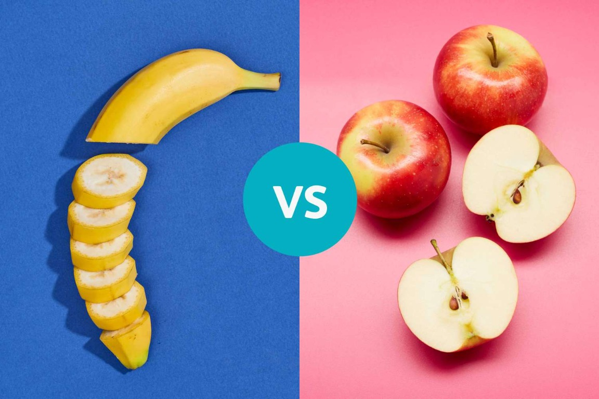

This project tested the ability to apply the skills from the last project (which used Nearest-Neighbor Logic) to this one in order to create a robot which can tell the difference between an apple and a banana. While I didn't actually use fruit in the final testing besides the banana my friend let me borrow, my robot was still able to gather data of various colors like magenta, red, blue, green, yellow, and more, and output whether it was closer to a banana (yellow) or an apple (red). See the video below for how this robot worked in real time.